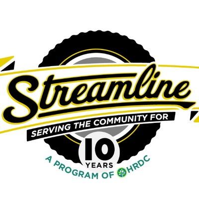
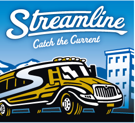

The Bus System
Community Commited
Streamline is committed to serving you over the long term. Changing with your needs and evolving with the community. So watch this site for updates as we continue to serve our community’s transportation needs. Better yet, take a ride on us and find out for yourself how fast, convenient, and reliable traveling on the Streamline bus can be.
Why You Will Like Streamline
Streamline offers service throughout the Bozeman area to fulfill everyone’s transportation needs. Economical, efficient, eco-conscious and fare free!

